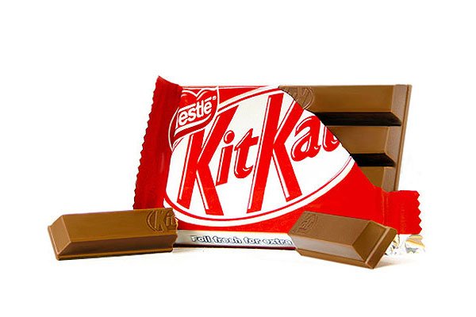
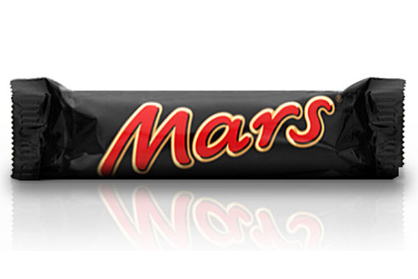
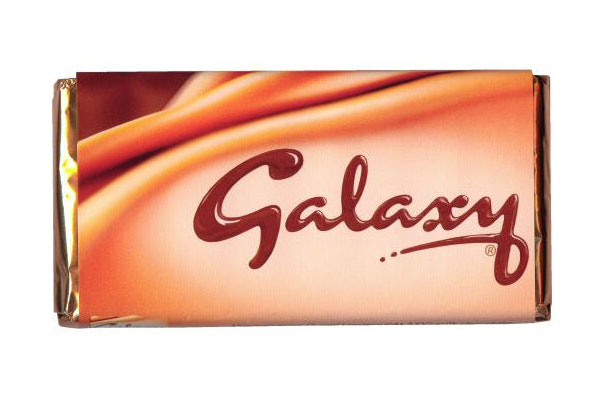
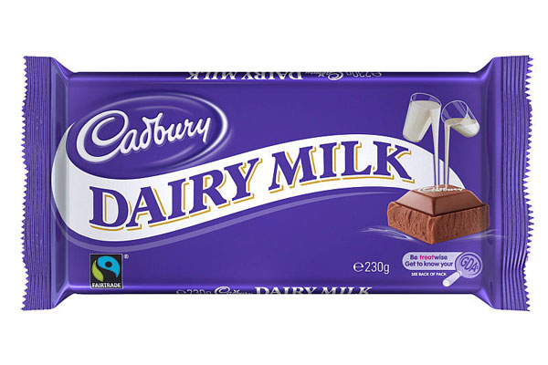
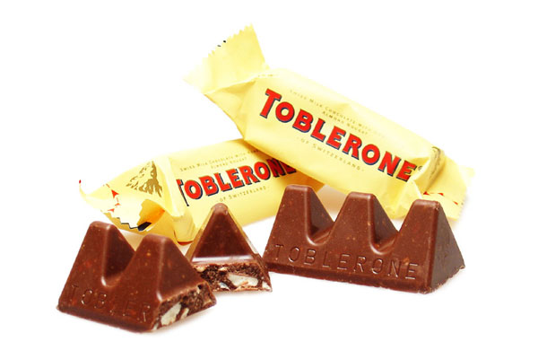
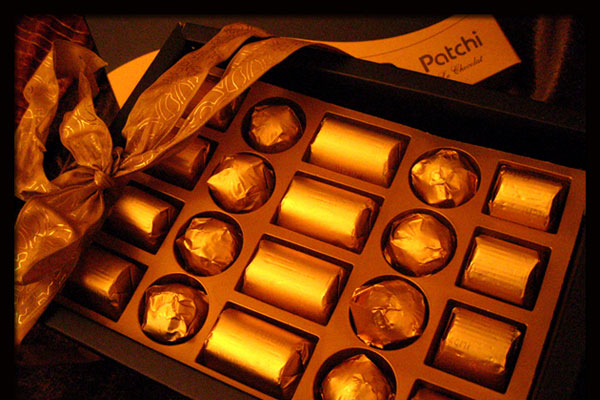
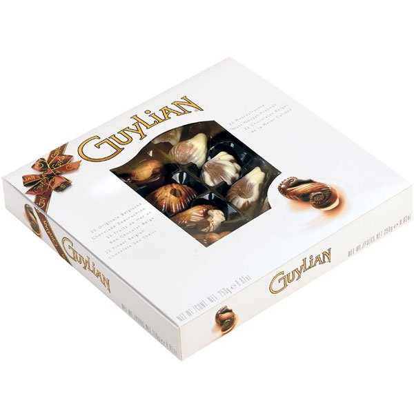
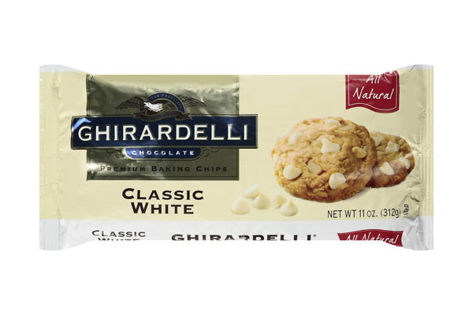
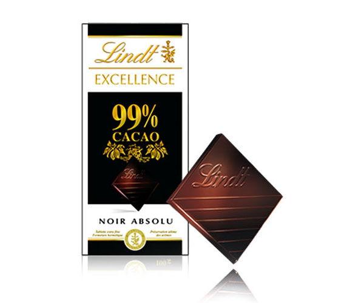
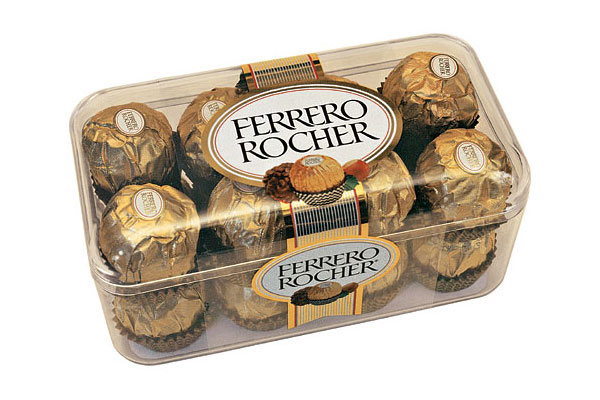

Самые популярные марки шоколада

Шоколад является уже давно синоним наслаждения и восхитительного вкуса. Вкушая его, зачастую люди закрывают глаза, стараясь в полной мере ощутить все удовольствие от сладости. Ведь в этом продукте в идеальной пропорции смешаны сливки, молоко и какао. А многие разновидности шоколада позволяют кондитерам заинтересовать в своей продукции любого, не оставив его равнодушным.
При этом эту сладость нельзя считать предназначенной лишь для гурманов. Ведь введя шоколад в питание можно нормализовать кровяное давление, снизить уровень сахара и угрозу диабета. А самое главное - он дарит хорошее настроение.
Сегодня в мире производится множество марок шоколадных плиток, батончиков, конфет и прочей продукции. При этом выделяется 10 самых крупных брендов, во многом благодаря которым мы и любим шоколад.

KitKat. В 1935 году в английском Йорке было запущено производство хрустящих батончиков Rowntree’s Chocolate. В одну плитку были объединены сразу 4 небольших шоколадных изделия. В 1937 году новый продукт получил название KitKat. Продукт стал настолько популярным, что вскоре стал неотъемлемой частью английского традиционного чаепития. Сами плитки состояли из молочных вафель, покрытым слоем горячего шоколада. В 1989 году компания Rowntree была выкуплена Nestle, а бренд KitKat стал активно продвигаться на мировых рынках. Естественно, производитель не стоял на месте. В продаже стали появляться батончики с разнообразными обертками, вкусами и ароматами. Теперь можно найти KitKat с клубникой и сливками, манго, лесными ягодами. Для тех, кто сидит на диете выпускается специальный низкоуглеводный продукт. Однако оказалось, что потребители по-прежнему предпочитают классический вкус и форму в 4 батончика. Ежегодно в мире продается хрустящих батончиков на сумму не менее 300 миллионов долларов.

Mars. Этот бренд знаменит своими высокими продажами по всему миру, батончики "Марс" ест больше всего людей. История бренда и всей компании началось на обычной американской кухне. Там Фрэнк Марс вместе со своей супругой начали делать недорогие конфеты. В 1911 году появилась на свет уже компания. Когда развившаяся компания открыла свой филиал в Англии, то на рынок появился батончик "Марс". С тех пор вкус продукта постоянно менялся, как и форма, и упаковка. Хотя сами ингредиенты и остались прежними, постоянно меняется их пропорция. Насыщенный вкус батончика включает в себя нугу, крошку миндаля, карамелевую начинку и густой шоколадный слой. Сегодня "Марс" выпускается в нескольких сортах

Galaxy. Говоря о шоколадном вкусе невозможно не упомянуть этот бренд. Galaxy дает человеку поистине глубокое наслаждение. Хозяина бренда является компания "Марс". Этот шоколад очень популярен не только в Англии, но и на Ближнем Востоке и в Африке. Во многих других странах мы знаем этот шоколад, как Dove. Этот продукт в своих разновидностях включает в себя множество составляющих - молочный шоколад и карамель, фрукты и орехи… Бренд появился на рынке еще в 1960 году, а с 1986 года им владеет компания "Марс". Под этой маркой выпускаются не только шоколадные плитки, но и смесь для приготовления горячего шоколада, мороженое и другие сладости.

Cadbury. Этот бренд является самым продаваемым среди всех шоколадных продуктов. История его началась еще в 1824 году, когда Джон Кэдбери в Лондоне начал свою карьеру кондитера. Он открыл свое кафе в Бирмингеме. Через семь лет он уже начал выпускать какао и горячий шоколад по собственным рецептам. Тогда в его работе основными инструментами были пестик и ступка. Интересно, что Джон Кэдбери являлся пожизненным членом Общества Трезвости. Свои сладкие продукты он рассматривал, как замену алкоголю, который нес разрушительные социальные функции. В 1913 году его наследники значительно изменили производимый продукт, сделав его намного более пористым. Гордость компании, молочный шоколад "Дэри Милк", выпускается еще с 1905 года. Сейчас бренд под своим именем выпускает также хлопья, молочные и фруктовые шоколадки и батончики и даже сухарики. Кэдбери является лакомым кусочком для большого бизнеса, недавно компания отклонила предложение о своей покупке концерном Kraft за 15 миллиардов долларов.

Toblerone. Упаковка этого шоколада весьма необычна, ведь она выполнена в форме треугольной призмы. Но еще больше людей привлекает сам вкус этого продукта. Рецепт шоколада был придуман в 1908 году Теодором Тоблером и его кузеном Эмилем Бауманном. Тогда в него входила нуга, миндаль и мед, покрытые сверху шоколадом. Само же название является сочетанием имени автора и итальянского слова торроне (особый вид нуги). Уже на следующий год предприимчивые кондитеры зарегистрировали свой бренд. Почему у шоколада такая необычная форма - до конца неясно. Кто-то считает, что треугольник напоминает гору Маттерхорн в Альпах. А кто-то полагает, что Тоблера вдохновляла живая пирамида из танцовщиц варьете. С именем шоколада связан даже политический скандал. В 1995 году шведский политик Салин израсходовала часть рабочих средств в том числе и на пару этих сладостей. Случай получил большую огласку под именем "Дело Toblerone". Сама же Салин ушла на время из политики, отказавшись от борьбы за пост-премьера. Сегодня шоколад поставляется с разными вкусами - обычный, белый, фрукты с орехами и медовый.

Patchi. Используя лучшие сорта какао и горячего шоколада, ливанские кондитеры создали новый сорт для настоящих гурманов. Компания была основана в 1974 году Низаром. Она сразу решила, что необходимо делать не просто вкусные вещи, но еще и облекать их в изысканную и великолепную упаковку. Patchi изначально позиционировался, как роскошный атрибут для самых богатых людей. Сегодня шоколадные конфеты производятся в смешанном бельгийско-швейцарском стиле. Бренд представлен в 140 магазинах 35 стран света. Конфеты славятся своими украшениями. Стили и цвета могут соответствовать подходящим для этого случаям или же временам года. Есть коллекции для таких праздников, как Рождество, Рамазан, День Святого Валентина и так далее. При этом в конфетах используются естественные ингредиенты - какао, молочный порошок, ванилин, жареные орехи и сухофрукты. Именно бренду Patchi принадлежит самый дорогой в мире шоколад. Коробка из 49 конфет продавалась за 5000 английских фунтов, он входит в коллекцию класса премиум "Сливки общества".

Guylian. Эта знаменитая марка шоколада родом из Бельгии. Основана компания была Гаем Фобертом. Имя новому продукту было дано от сочетания слов Гай и Лилиан (жена Фоберта). Это, пожалуй, самый известный на сегодня шоколад в форме морских раковин. Внутри них находится нежное пралине с орехами и различными начинками. Символом бренда является морской конек, использование его охраняется авторским правом. Компания сегодня продает свои изысканные конфеты в подарочных коробках индивидуального дизайна, выпускаются также батончики и трюфели. В 2005 году компания Guylian попала в Книгу рекордов Гиннеса, так как сумела создать самое крупное шоколадное пасхальное яйцо всех времен. Оно было выставлено в городе Сент-Никлас, Бельгия. Над чудо-шоколадкой работали 8 дней 26 кондитеров компании. Скульптура получилась 8 метров в высоту и 6 метров в ширину. Для ее изготовления потребовалось 1950 килограмм шоколада.

Ghirardelli. В 1852 году в шоколадный бизнес США пришел итальянец Доминго Джирарделли. Немало претерпев к тому времени от череды финансовых потерь и кризисов, он и не предполагал, что со временем весь мир полюбит его марку конфет. Отличительным их стилем стал неотразимый вкус и форма "Ghirardelli". На сегодня это вторая по возрасту шоколадная компания в США. При этом здесь, как мало где еще, контролируются все аспекты производства шоколада. До 40% какао-бобов отклоняется, чтобы продукт получался по-настоящему высшего качества. Затем плоды обжигают и измельчают до крупинок диаметров в 19 микрометров. Итальянские мастера производят сегодня несколько разновидностей шоколада, есть тут и необычные с привкусом корицы или мяты. Компания выпускает также и другие продукты питания - шоколадные напитки и ароматные соусы. Сегодня штаб-квартира компании находится в США, а сама она входит в число ведущих шоколадных брендов в мире.

Lindt@Sprungli. История компании начинается в 1845 году. Тогда Рудольф Спрангли и его сын владели кондитерским магазином в Цюрихе. Они решили расширить свой бизнес и начать выпускать шоколад. Сын Рудольфа в 1899 году приобрел компанию Линдт, и компания получила свое нынешнее название. Однако компания постоянно развивается, так, в 1994 году была приобретена австрийская шоколадная фабрика, а в 1997 и 1998 - итальянская и американская. Бренд предлагает один из самых уникальных шоколадных вкусов. Швейцарцы смогли привнести в кондитерские изделия частичку искусства. Бренд долгие годы оставался эталоном того, каким должен быть молочный шоколад. К тому же швейцарцы выпускают его разновидности. Есть коллекция с засушенными фруктами, отличаются стили оформления и методы заливки. Ведь шоколад должен быть идеально гладким. У компании 6 заводов по всему свету. Славу бренду принесли их золотые кролики Банни. Эти пасхальные шоколадки продаются на каждую Пасху вот уже с 1952 года. При этом у каждого кролика вокруг шеи повязана милая ленточка. В ассортименте Lindt@Sprungli множество продукции: черный и белый шоколад со вкусом ирисок, карамели, кофе, ванили, фисташек, мандарина, вишня и многих других ароматов.

Ferrero Rocher. А напоследок мы оставим, как это и положено, самое вкусное. Ferrero Rocher - это крупные шоколадные конфеты, созданные итальянскими кондитерами и завоевавшие весь мир. Это лакомство представляет собой цельный лесной орех, покрытый молочным шоколадом, окруженный начинкой Nutella и заключенный в ореховую скорлупу. На основе этой конфеты бренд создал еще несколько шедевров - со вкусом лимона, лесных год, фисташек, миндаля и лесных орехов. Ну а у нас самым популярным лакомством является "Рафаэлло", где место ореха занял миндаль, а суть конфеты осталась той же. Конфеты начали производиться с 1982 года, каждая из них содержит 73 калории. Обертки обычно позолоченные или серебряного цвета, демонстрируя элегантность и роскошь такого блюда.